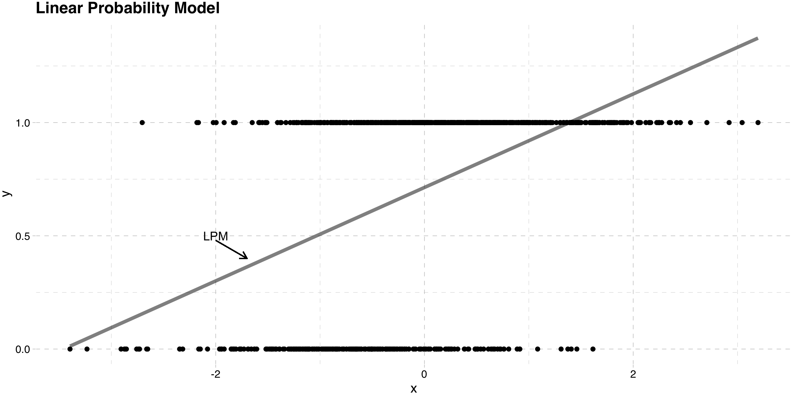
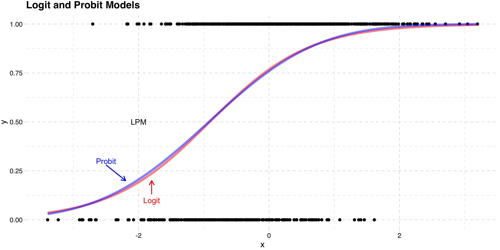
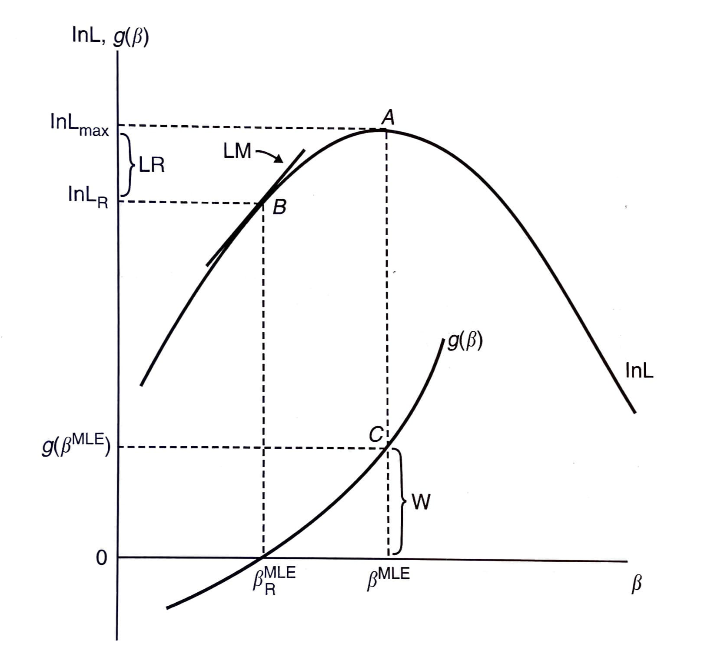

Limited Dependent Variables
EC655 - Econometrics
Justin Smith
Wilfrid Laurier University
Fall 2023

Introduction
Introduction
Many economic outcomes are qualitative in nature
Grouped into categories
Work or not
Drive, take bus, cycle to work
Number of visits to Doctor
People sometimes use alternative methods in this context
- Though linear regression does still work in many cases
In this section we cover models for these types of variables
Binary Choice Models
Linear Probability Model
Potential Outcomes
Start with the same potential outcomes setup
\(y_{1}\) is the outcome with treatment
\(y_{0}\) is the outcome without treatment
\(w\) is a binary variable with 1 denoting treatment, and 0 no treatment
We observe \((y, w)\), where
\[y = y_{0} + (y_{1} -y_{0})w\]
- Key difference here is that \(y_{1}\) and \(y_{0}\) are binary
\[y_{0} \in \{0,1\}\] \[y_{1} \in \{0,1\}\]
Linear Probability Model
Regression
- The slope in a regression of \(y\) on \(w\) is
\[E(y|w=1) - E(y|w=0)\] \[= \left [ E(y_{1}|w=1) - E(y_{0}|w=1) \right ] + E(y_{0}|w=1) - E(y_{0}|w=0)\]
First part is ATT, second part is selection bias
Mechanics are the same as when we had continuous outcomes
There is a difference in interpretation
\(y\) is a Bernoulli random variable,
\[E(y|w) = 1 \times Pr(y=1|w) + 0 \times Pr(y=0|w) = Pr(y=1|w)\]
Linear Probability Model
So you can restate the difference in observed means as
\[Pr(y=1|w=1) - Pr(y=1|w=0)\] \[= \left [ Pr(y_{1}=1|w=1) - Pr(y_{0}=1|w=1) \right ] + Pr(y_{0}=1|w=1) - Pr(y_{0}=1|w=0)\]
You can interpret as the difference in response probabilities
Difference in response probabilities is causal effect if
Independence of potential outcomes
Mean independence of potential outcomes
Conditional mean independence of potential outcomes
Linear Probability Model
What the above says is that regression still works when the treatment is binary
Causal effects depend on same assumptions as before
To estimate, use OLS regression of \(y\) on \(w\)
When \(y\) is binary, this is called the Linear Probability Model
Linear Probability Model
Issues with Linear Probability Model
Main problem is predicted probabilities can go outside [0,1] interval
- Some chance of nonesense probabilities
Mainly a problem of predictions
In most economic applications, we care about the slope
- So nonsense predictions are not a big problem
Linear Probability Model
The model exhibits heteroskedasticity
The population least squares regression of \(y\) on \(w\) is
\[y = \beta_{0} + w\beta_{1} + u\]
- The conditional variance of the error is
\[Var[u|w] = Var[y|w] = E[y^2|w] - E[y|w]^2\]
- Since \(y\) is binary, \(y^2 = y\), so
\[Var[y|w] = E[y|w] - E[y|w]^2\]
\[= E[y |w] (1-E[y|w])\]
Linear Probability Model
- Finally \(E[y|w] = Pr(y=1|w)\), so
\[Var[u|w] = Pr(y=1|w) (1-Pr(y=1|w))\]
This means that the variance of the error term is a function of \(w\)
It introduces heteroskedasticity into the model
Solution: use heteroskedasticity robust standard errors
Linear Probability Model
Nonlinear Models
Background
In some cases we may want to fix the predicted probability issue
- If you are doing prediction, for example
One way to do this is to feed the model through a CDF
This is often motivated with an index model
Suppose we model some latent variable \(y^*\) as
\[y^* = \beta_{0} + \beta_{1}w + e\]
- It is some underlying continuous outcome driving our decisions
Nonlinear Models
Issue is we do not observe \(y^*\)
Instead, we observe the binary \(y\) where
\[y = 1\{y^*>0\}\]
- Plugging the model into this
\[y = 1\{\beta_{0} + \beta_{1}w +e>0\}\]
- The probability that \(y=1\) is therefore
\[Pr(y=1|w) = Pr(\beta_{0} + \beta_{1}w +e>0 |w)\]
Nonlinear Models
- The random component is \(e\), so rearrange to isolate it
\[Pr(y=1|w) = Pr(e > -\beta_{0} - \beta_{1}w |w)\] \[ =1 - F(-\beta_{0} - \beta_{1}w)\] \[ =G(\beta_{0} + \beta_{1}w)\]
\(G()\) is the probability distribution of \(e\)
- \(1 - F(-\beta_{0} - \beta_{1}w) = F(\beta_{0} + \beta_{1}w)\) because \(G()\) is symmetric
The probability that \(y\) equals 1 depends on
Treatment status \(w\)
The distribution of \(e\)
Different choices for \(F()\) distribution lead to different models
Nonlinear Models
Probit Model
- Assuming \(e \sim \mathcal{N}(0,\sigma^{2}_{e})\) leads to the Probit Model
\[Pr(y=1|w) = \Phi \left(\frac{\beta_{0} + \beta_{1}w}{\sigma^{2}_{e}} \right)\]
- where
\[\Phi (z) = \int_{-\infty}^{z} \frac{1}{\sqrt{2\pi}} e^{\frac{-v^2}{2}}\,dv\]
Because \(\Phi(.)\) is a CDF, \(Pr(y=1|w)\) is always between 0 and 1
- This solves the predicted probability problem
Nonlinear Models
- The difference in probabilities between treatment and control is
\[Pr(y=1|w = 1) - Pr(y=1|w=0)\] \[= \Phi \left(\frac{\beta_{0} + \beta_{1}}{\sigma^{2}_{e}} \right) - \Phi \left(\frac{\beta_{0}}{\sigma^{2}_{e}} \right)\]
Notice that \(\beta_{1}\) does not equal the difference in response probabilities
They are the slopes in the index model
The index model parameters are not usually of interest
To get the difference in response probabilities, feed parameters into the CDF first
In nonlinear models, parameters are not “marginal effects”
- You need to separately compute them after estimating the model
Nonlinear Models
- In models with more variables and where they are continuous
\[Pr(y=1|\mathbf{x}) = \Phi \left(\frac{\mathbf{x}\boldsymbol{\beta}}{\sigma^{2}_{e}} \right)\]
- The marginal effect for continuous variable \(x_{j}\)
\[\frac{\partial Pr(y=1|\mathbf{x})}{\partial x_{j}} = \phi \left(\frac{\mathbf{x}\boldsymbol{\beta}}{\sigma^{2}_{e}} \right) \frac{\beta_{j}}{\sigma^{2}_{e}}\]
This is a function of the entire vector \(\mathbf{x}\)
You need to specify their values to get the marginal effect
Normally people hold them at the mean
In theory you can get a distribution of marginal effects
Nonlinear Models
Logit Model
- Assuming \(e \sim \text{Logistic}(0,\sigma^{2}_{e})\) leads to the Logit Model
\[Pr(y=1|w) = \Lambda \left(\frac{\beta_{0} + \beta_{1}w}{\sigma^{2}_{e}} \right)\]
where
\[\Lambda (z) = \frac{e^z}{1+e^z}\]
Again, because \(\Lambda(.)\) is a CDF, \(Pr(y=1|w)\) is always between 0 and 1
Nonlinear Models
- The observed difference in probabilities is
\[Pr(y=1|w = 1) - Pr(y=1|w=0)\] \[= \Lambda \left(\frac{\beta_{0} + \beta_{1}}{\sigma^{2}_{e}} \right) - \Lambda \left(\frac{\beta_{0}}{\sigma^{2}_{e}} \right)\]
- In models with more variables and where they are continuous
\[Pr(y=1|\mathbf{x}) = \Lambda \left(\frac{\mathbf{x}\boldsymbol{\beta}}{\sigma^{2}_{e}} \right)\]
Nonlinear Models
- The marginal effect for continuous variable \(x_{j}\)
\[\frac{\partial Pr(y=1|\mathbf{x})}{\partial x_{j}} = \Lambda \left(\frac{\mathbf{x}\boldsymbol{\beta}}{\sigma^{2}_{e}} \right) \left( 1-\Lambda \left(\frac{\mathbf{x}\boldsymbol{\beta}}{\sigma^{2}_{e}} \right) \right)\frac{\beta_{j}}{\sigma^{2}_{e}}\]
- Again, this is a function of the full set of variables
Nonlinear Models
Estimation of Probit and Logit
Both models usually estimated by Maximum Likelihood
Method maximizes the probability of getting our sample by choosing parameters
- TheLikelihood Function is the function of the parameters given the data
The probability distribution of \(y_i\) is
\[f(y_i| \mathbf{x_{i}};\boldsymbol{\beta})= F \left(\frac{\mathbf{x_{i}}\boldsymbol{\beta}}{\sigma^{2}_{e}} \right)^{y_i} \left(1- F \left(\frac{\mathbf{x_{i}}\boldsymbol{\beta}}{\sigma^{2}_{e}} \right) \right) ^{1-y_{i}}\]
Nonlinear Models
- The joint probability of observing the all the \(y_{i}\) in the data is
\[f(\mathbf{y}| \mathbf{X};\boldsymbol{\beta})=\Pi_{i=1}^n F \left(\frac{\mathbf{x_{i}}\boldsymbol{\beta}}{\sigma^{2}_{e}} \right)^{y_{i}} \left(1- F \left(\frac{\mathbf{x_{i}}\boldsymbol{\beta}}{\sigma^{2}_{e}} \right) \right) ^{1-y_{i}}\]
- The Likelihood Function recasts as a function of the parameters given the data
\[\mathcal{L}(\boldsymbol{\beta}|\mathbf{y}, \mathbf{X})=\Pi_{i=1}^n F \left(\frac{\mathbf{x_{i}}\boldsymbol{\beta}}{\sigma^{2}_{e}} \right)^{y_{i}} \left(1- F \left(\frac{\mathbf{x_{i}}\boldsymbol{\beta}}{\sigma^{2}_{e}} \right) \right) ^{1-y_{i}}\]
Nonlinear Models
Both models usually estimated by Maximum Likelihood
Method maximizes the joint probability of \(y\) values conditional on \(\mathbf{x}\)
- This is called the Likelihood Function
In the case of a binary \(y\), the likelihood function is
\[f[y| \mathbf{x};\boldsymbol{\beta}]=P[Y_{1} = y_{1}, Y_{2} = y_{2}, \ldots, Y_{n} = y_{n}|\mathbf{x_{i}};\boldsymbol{\beta}]\] \[=\Pi_{y_{i}=1}F \left(\frac{\mathbf{x_{i}}\boldsymbol{\beta}}{\sigma^{2}_{e}} \right) \Pi_{y_{i}=0} \left[1-F \left(\frac{\mathbf{x_{i}}\boldsymbol{\beta}}{\sigma^{2}_{e}} \right) \right]\] \[=\Pi_{i=1}^{n} F \left(\frac{\mathbf{x_{i}}\boldsymbol{\beta}}{\sigma^{2}_{e}} \right)^{y_{i}} \left[1-F \left(\frac{\mathbf{x_{i}}\boldsymbol{\beta}}{\sigma^{2}_{e}} \right)\right] ^{1-y_{i}}\]
Nonlinear Models
Researchers usually focus on the log of the likelihood instead
It is a monotonic (increasing) transformation of the likelihood
The same parameter vector solves both versions
Log likelihoods are easier to work with
Log Likelihood \[ln\mathcal{L}(\boldsymbol{\beta}|\mathbf{y}, \mathbf{X})= \sum_{i=1}^{N}\{ y_{i}lnF \left(\frac{\mathbf{x_{i}}\boldsymbol{\beta}}{\sigma^{2}_{e}} \right)+ (1-y_{i})ln (1-F \left(\frac{\mathbf{x_{i}}\boldsymbol{\beta}}{\sigma^{2}_{e}} \right)) \}\]
To solve this equation, you need numerical methods
- A grid search algorithm that finds the maximum value
Nonlinear Models
In ML environments, the estimated variance of \(\boldsymbol{\hat{\beta}}\) is estimated as the negative of the expected value of the Hessian (information matrix) \[\hat{Var}(\boldsymbol{\hat{\beta}}) = -E[(\frac{\partial^2 lnL}{\partial\boldsymbol{\hat{\beta}} \partial \boldsymbol{\hat{\beta}^{'}}})^{-1}]\] \[= (\sum_{i=1}^{n} \frac{f(\mathbf{x_{i}^{'}}\boldsymbol{\hat{\beta}})^2 }{ F(\mathbf{x_{i}^{'}}\boldsymbol{\hat{\beta}})(1- F(\mathbf{x_{i}^{'}}\boldsymbol{\hat{\beta}}) ) } \mathbf{x_{i}x_{i}^{'}} )^{-1}\]
where \(F(.)\) is either the Normal or Logistic CDF, and \(f(.)\) is the associated PDF
Nonlinear Models
Nonlinear Models
Hypothesis Testing in Probit and Logit
Simple tests for coefficient significance is done by the usual \(t\)-test method
Assume \(\boldsymbol{\hat{\beta}}\) has normal distribution (asymptotically)
Test statistic \(Z = \frac{\hat{\beta}_{k}}{\hat{SE}(\hat{\beta}_{k})}\)
Nonlinear Models
More complicated tests done using one of 3 methods:
Likelihood Ratio (LR) Test
Test statistic \(LR = 2[ln\hat{L}_{U} - ln\hat{L}_{R}]\)
\(ln\hat{L}_{R}\) is log likelihood evaluated at restricted parameter vector
Wald (W) Test
Test statistic \(W = \hat{g}^{'}[\hat{G}\hat{Var}(\boldsymbol{\hat{\beta}})\hat{G}^{'}]\hat{g}\)
\(\hat{g}\) is a vector of restrictions evaluated at \(\boldsymbol{\hat{\beta}}\)
\(\hat{G}\) is the derivative of a vector of restrictions evaluated at \(\boldsymbol{\hat{\beta}}\)
Lagrange Multiplier (LM) Test
Test statistic \(LM = \hat{d}^{'}[\hat{Var}(\boldsymbol{\hat{\beta}})]\hat{d}\)
\(\hat{d}\) is the derivative of \(lnL\) evaluated at restricted \(\boldsymbol{\hat{\beta}}\)
Restrictions can be linear or non-linear
Nonlinear Models
Nonlinear Models
Goodness of Fit in Probit and Logit
Confusion Matrix
Actual Predicted 0 1 Total 0 # Correct 0 # Incorrect 1 # Pred 0 1 # Incorrect 0 #Correct 1 # Pred 1 Total # True 0 # True 1 Pseudo-\(R^{2}\)
McFadden \(\rightarrow\) \(R^{2} = 1 - \frac{ln\hat{L}_{U}}{ln\hat{L}_{0}}\)
- \(ln\hat{L}_{0}\) is log-likelihood with no explanatory variables
Others are possible, but goodness of fit is not incredibly important